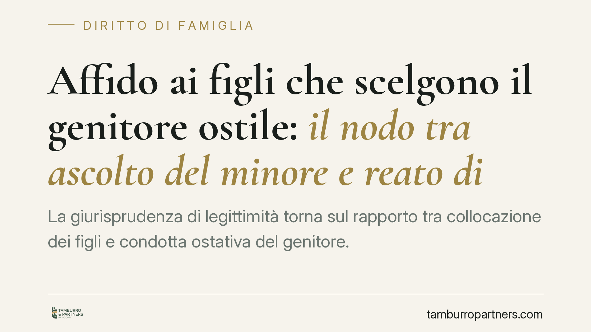

Affido ai figli che scelgono il genitore ostile: il nodo tra ascolto del minore e reato di inadempimento
La giurisprudenza di legittimità torna sul rapporto tra collocazione dei figli e condotta ostativa del genitore. Quando i ragazzi, ascoltati dal giudice, esprimono una preferenza netta, questa pesa sulla decisione. Ma rispettarne la volontà non assolve chi ostacola i rapporti con l'altro genitore: resta la responsabilità civile e, nei casi più gravi, penale.

Il caso in sintesi
Una madre contesta la collocazione dei figli adolescenti presso il padre, descritto come genitore ostile verso i rapporti con lei. La Corte d'Appello conferma la permanenza dei ragazzi presso il padre, valorizzando la loro volontà espressa in sede di ascolto ed evitando l'ulteriore trauma di un allontanamento forzato. Allo stesso tempo, la decisione non chiude gli occhi sulla condotta ostruzionistica, che resta valutabile su un piano distinto.
Una precisazione doverosa: i riferimenti puntuali alla pronuncia (numero e anno) vanno verificati sulla fonte ufficiale prima di qualsiasi uso processuale. In questa sede ci concentriamo sui principi, consolidati e indipendenti dal singolo provvedimento.
Inquadramento normativo
L'ascolto del minore non è un atto di cortesia processuale: è un obbligo. L'art. 315-bis del Codice civile riconosce al figlio che abbia compiuto dodici anni — o anche di età inferiore, se capace di discernimento — il diritto di essere ascoltato nei procedimenti che lo riguardano. L'art. 336-bis c.c. disciplina le modalità dell'ascolto, oggi ripreso e dettagliato dalla riforma del processo di famiglia (art. 473-bis.4 e seguenti del Codice di procedura civile).
La volontà del minore adolescente non è vincolante, ma diventa un elemento di peso crescente con l'età e la maturità. Il giudice deve tenerne conto e motivare se decide di discostarsene. Sullo sfondo opera il principio dell'art. 8 della Convenzione europea dei diritti dell'uomo, che tutela la vita familiare di tutti i soggetti coinvolti, figli compresi.
Il piano della condotta ostativa è diverso. Sul versante civile, gli artt. 330 e 333 c.c. consentono interventi sulla responsabilità genitoriale in caso di condotte pregiudizievoli. Sul versante penale rileva l'art. 388 c.p. (mancata esecuzione dolosa di un provvedimento del giudice): la norma sanziona, nella formulazione vigente, anche l'elusione dei provvedimenti del giudice civile concernenti l'affidamento di minori. La collocazione esatta del comma va riscontrata sul testo aggiornato del codice: la ripartizione interna dell'articolo è stata oggetto di interventi normativi e si consiglia la verifica puntuale prima di invocarla in un atto.
Implicazioni pratiche
Per il genitore che si sente escluso, il messaggio è duplice e va compreso senza illusioni.
Primo: la preferenza dei figli adolescenti può orientare la collocazione anche verso il genitore percepito come ostile. Non esiste alcun automatismo per cui la condotta scorretta di un genitore produce, da sola, lo spostamento dei figli presso l'altro. Il criterio guida resta l'interesse concreto del minore, che include la sua stabilità e la sua volontà matura.
Secondo: il rispetto di quella volontà non trasforma l'ostruzionismo in comportamento lecito. Chi impedisce o sabota i rapporti con l'altro genitore espone sé stesso a conseguenze civili e, nei casi dolosi e persistenti, penali. Le due valutazioni viaggiano su binari separati: si può restare collocatari e, al tempo stesso, essere ammoniti o condannati.
Per il genitore collocatario che tende a ostacolare le visite, l'avvertenza è speculare: la posizione di prevalenza non è una franchigia. L'inadempimento reiterato può incrinarla nel tempo e generare responsabilità personali.
Cosa fare in concreto
- Documentate ogni episodio. Annotate date, orari e modalità dei mancati incontri con precisione. Una cronologia ordinata vale più di una denuncia emotiva.
- Attivate prima gli strumenti civili. L'art. 709-ter c.p.c. (oggi art. 473-bis.38 c.p.c. nel processo riformato) consente al giudice di ammonire il genitore inadempiente, disporre risarcimenti e sanzioni. È la via ordinaria contro l'inadempimento nelle visite.
- Valutate la querela solo con cautela. La strada penale ex art. 388 c.p. richiede dolo e un provvedimento del giudice da eseguire. Verificate presupposti e testo della norma con un legale prima di procedere.
- Non reagite con contro-condotte. Trattenere i figli, sospendere il mantenimento o rispondere con analoghe ostruzioni indebolisce la vostra posizione e può ritorcersi contro di voi.
- Chiedete il coinvolgimento dei servizi. Servizi sociali e, dove previsto, il coordinatore genitoriale possono monitorare la situazione e fornire al giudice elementi oggettivi.
L'ascolto del minore e la tutela del rapporto con entrambi i genitori non sono in conflitto: sono due facce dello stesso interesse. Confonderle, o pretendere che la condotta dell'altro produca effetti automatici, è l'errore più frequente e più costoso.
Disclaimer
Contributo informativo a cura di Tamburro & Partners - Avv. Giuseppe Tamburro. Non costituisce parere legale.
Ogni famiglia ha il suo equilibrio.
Separazione, divorzio, affidamento, assegno: se vuoi un confronto riservato su una specifica situazione, scrivi allo studio. Ti rispondiamo entro un giorno lavorativo.